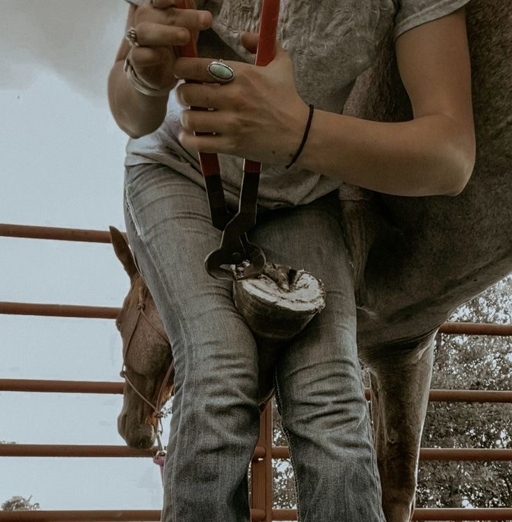
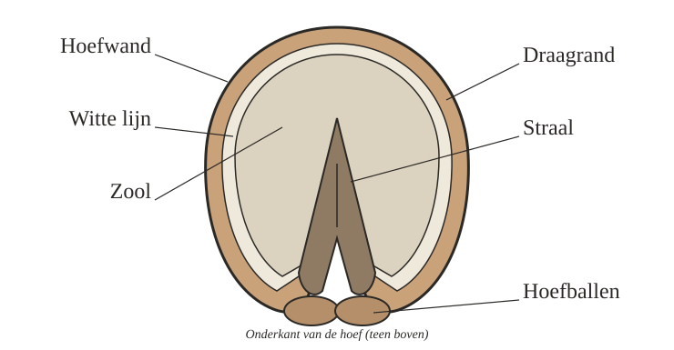

Proces van het bekappen van een paard

Wat is het proces van de hoeven doen?
Een paard dat niet in het wild leeft, slijt zijn hoeven niet vanzelf genoeg af. Daarom komt de hoefsmid ongeveer elke zes tot acht weken langs. Hij kan de hoeven alleen bekappen, dan blijft het paard op blote voeten, of hij kan het paard daarna ook beslaan met ijzers.
Bekappen
- Kijken. De hoefsmid kijkt eerst hoe het paard staat en loopt.
- Schoonmaken. De onderkant van de hoef wordt schoongemaakt en alle losse hoorn gaat van de zool af.
- Zool en straal. De zool wordt vlak gemaakt en de straal wordt een beetje bijgesneden.
- Inkorten. Met het kapmes en de renet gaat de te lange hoornwand eraf. De smid begint bij de teen, aan de voorkant van de hoef, en haalt daar meer weg dan achteraan.
- Vlak raspen. Met de rasp wordt de draagrand weer mooi vlak, zodat de hoef recht onder het been staat.
Beslaan
- Eerst bekappen. Een ijzer past alleen goed onder een hoef die goed bekapt is.
- Maat nemen. De smid meet de breedte van het ijzer en de lengte van de takken.
- Verhitten en vormen. Het ijzer gaat in de oven en wordt heet in de juiste vorm geslagen.
- Passen. Het hete ijzer wordt even tegen de hoef gehouden. Aan de brandplekjes ziet de smid waar het nog niet goed aansluit. De smid let vooral op de witte lijn, want daar moeten de nagels komen.
- Afkoelen. Het ijzer gaat in een emmer water.
- Vastnagelen. Het ijzer wordt met hoefnagels vastgezet, meestal vier aan de buitenkant en drie aan de binnenkant.
- Afwerken. De punten van de nagels worden afgeknipt en omgebogen. Daarna vijlt de smid de scherpe randen en de draagrand glad.
Warm of koud beslag?
Bij warm beslag wordt het ijzer heet gemaakt. Zo kan de smid het precies passend maken. Bij koud beslag gebruikt hij een ijzer dat al een vorm heeft. Dat gaat sneller en is goedkoper, maar je kunt het minder goed aanpassen.
Tussendoor
Tussen twee bezoeken van de hoefsmid door krab je de hoeven elke dag uit. Je let op hoe ze ruiken, hoe ze eruitzien en of het paard anders gaat lopen. Zo zie je problemen op tijd.
Uit welke delen bestaat een hoef?

- Hoefwand: de harde buitenkant van hoorn. Het hoorn leeft zelf niet, maar groeit steeds aan vanuit de kroonrand.
- Kroonrand: de overgang van huid naar hoorn, bovenaan de hoef. Hier groeit de hoef.
- Zool: het hoorn aan de onderkant. Bij een gezonde hoef is de zool een beetje hol en ongeveer een centimeter dik.
- Witte lijn: de verbinding tussen hoefwand en zool. Hier slaat de hoefsmid de nagels in.
- Straal: het V-vormige, zachte deel achterin. Het voelt veerkrachtig, een beetje als het rubber van een autoband.
- Hoefballen: de zachte, elastische delen achter de straal. Ze helpen schokken op te vangen.
- Hoefbeen: het bot binnen in de hoef, omgeven door de lederhuid vol bloedvaten en zenuwen.
Ijzers of blote voeten?
Wanneer krijgt een paard ijzers?
Ijzers geven de hoef extra bescherming en grip. Of een paard ijzers nodig heeft, hangt af van drie dingen: het werk dat het paard doet, de ondergrond waarop het loopt en hoe sterk de hoef zelf is.
Jonge paarden krijgen nog geen ijzers. Veulens tot een half jaar hoeven meestal nog niet bekapt te worden, en pas vanaf ongeveer drie jaar kan een paard beslagen worden.
Een nadeel van ijzers is dat de hoefwand beschadigd raakt door de nagels. Bij zwakke hoeven kan dat problemen geven.
Wanneer blijft een paard op blote voeten?
Een paard op blote voeten wordt alleen bekapt. Dat is goedkoper en de hoef kan natuurlijker bewegen. Blote voeten werken vaak goed in de rijbak en in de wei. Op de harde weg of bij buitenritten kan het lastiger zijn.
Daarvoor bestaan hoefschoenen. Die geven extra bescherming, bijvoorbeeld als een paard van ijzers naar blote voeten gaat of dunne zolen heeft.
Er is geen keuze die voor elk paard de beste is. Overleg het daarom altijd met de hoefsmid.